Racial and Socioeconomic Disparities in Distributed Energy Resource Adoption: Evidence from California ZIP/ZCTA Areas Across Solar, Storage, and EV Charging
As distributed energy resources (DERs) such as rooftop solar, battery storage, and EV charging become more central to decarbonization, resilience, and electrification planning, the benefits they deliver are not guaranteed to be shared evenly. Prior work on rooftop PV shows that adoption can remain stratified by race and ethnicity even after accounting for income and related socioeconomic characteristics (Sunter et al. 2019). This paper extends that framing to a multi-DER setting and asks whether demographic and infrastructure factors shape inequitable access to different DER types across California ZIP/ZCTA areas. I build a California ZIP/ZCTA-level dataset that integrates rooftop PV, storage, EV charging, and contextual controls from ACS, NASA POWER, utility territory, and electricity demand sources. Using a consistent model ladder, I show that race remains statistically associated with DER adoption across multiple technologies and that the resulting disparity patterns differ meaningfully across PV, storage, and charging. The results support a race-aware interpretation of DER equity and challenge the assumption that race-neutral planning frameworks are sufficient for equitable clean energy deployment.
1. Introduction
1.1 Motivation and problem
As the electricity system decarbonizes, distributed energy resources (DERs) are becoming central to emissions reduction, local resilience, and electrification. In this paper, DERs are treated conceptually as behind-the-meter resources below 5 MW, even though some source-specific processing rules use tighter operational cutoffs to isolate DER-scale observations in the current pipeline. These technologies are often discussed together in policy debates, but the benefits they deliver are heterogeneous: rooftop PV can reduce bills, storage can provide outage resilience, and charging infrastructure shapes who can participate in transportation electrification.
The clean energy transition is therefore not just a deployment problem. It is also a distributional problem. If access depends on financing, housing conditions, local markets, siting decisions, permitting, interconnection, or neighborhood infrastructure, then the transition can reproduce existing inequities rather than reduce them. Prior work on rooftop solar already suggests that adoption is not race-neutral, but a narrower solar-only lens cannot tell us whether inequity is repeating across multiple DER types or whether each technology introduces its own pattern of exclusion.
California is an especially useful case because it combines high DER penetration, ambitious climate policy, substantial socioeconomic diversity, and pronounced spatial inequality. A practical obstacle, however, is that DER data are fragmented across technologies, agencies, and geographies. A core contribution of this project is therefore to assemble a consistent California ZIP/ZCTA-level dataset across multiple DER categories so the equity question can be tested under comparable outcomes, controls, and modeling assumptions.
1.2 Research question
The central research question is: how do demographic and infrastructure-related factors shape inequitable access to different types of DERs in California? A related question is whether race remains statistically significant once socioeconomic, climate, institutional, and infrastructure-related controls are added, and if so whether that result challenges current race-neutral planning frameworks for DER policy.
Three more specific questions guide the empirical analysis. First, are disparities similar across solar PV, battery storage, and EV charging, or does the equity story change by technology? Second, when income, education, and other adoption-capacity proxies are included, do racial and ethnic composition variables still explain meaningful differences in deployment intensity? Third, how much of the observed variation is absorbed by place-based and institutional factors such as utility territory, demand, and installed energy-system context, and how much remains after those adjustments?
The rest of the paper is structured as follows. Section 2 reviews the prior literature and states the gap this paper addresses, and Section 3 describes the data and measures. Section 4 reports the results, Section 5 discusses mechanisms and policy implications, and Section 6 sets out the empirical strategy and the full model ladder. Section 7 states the limitations and Section 8 concludes. Supporting robustness visuals are collected in the appendix.
1.3 Contributions
This paper contributes in three ways. First, it builds a multi-DER California ZIP/ZCTA dataset designed for equity analysis and later public reuse. Second, it applies a consistent model ladder across DER types so disparities can be compared directly rather than technology by technology under unrelated specifications. Third, it provides evidence that race remains statistically associated with DER adoption across multiple technologies, which supports the argument that race should be explicitly considered in DER-related policymaking and equity planning frameworks rather than treated as outside the scope of race-neutral design.
2. Background and Prior Work
2.1 Foundational DER and PV adoption work
The closest foundational studies focus on distributed solar adoption. Lukanov and Krieger (2019) analyze California PV deployment using place-based socioeconomic factors and show that adoption is patterned by neighborhood conditions. Sunter, Castellanos, and Kammen (2019) extend the equity lens by showing that racial and ethnic disparities in rooftop PV deployment persist even after accounting for income and related socioeconomic variables. At a different spatial scale, Kurdgelashvili, Kwon, and Larsen (2019) demonstrate how adoption can be modeled empirically at the county level in California. Together, these studies provide the methodological starting point for the present paper.
2.2 Why the equity lens needs to extend beyond PV
What those studies do not answer is whether inequity in DER adoption is a solar-specific phenomenon or a broader pattern across multiple technologies. That distinction matters because the meaning of adoption differs by DER type. Rooftop PV depends heavily on roof control, housing tenure, financing, and installer availability. Storage overlaps with PV but adds stronger dependence on upfront capital, resilience value, and program design. EV charging depends much more on siting, commercial activity, public infrastructure, and host context. A multi-DER analysis therefore matters not just because it broadens the dataset, but because it tests whether inequity repeats across technologies or changes form with each technology.
2.3 Race, energy burden, and race-neutral policy critiques
A broader equity literature also motivates the explicit inclusion of race. ACEEE’s work on racial disparities in energy burden shows that race-linked inequities can persist even after controlling for income, which is relevant to DER adoption even when DERs themselves are not the dependent variable. Greenlining’s Demystifying Equity in California’s Energy Grid Transition similarly argues that infrastructure and transition planning cannot be treated as race-neutral if the underlying burdens and access conditions are not race-neutral. This literature supports the central premise of the current paper: if race remains statistically significant after standard socioeconomic controls, that result has implications for how DER equity should be addressed in policy.
2.4 Infrastructure constraints and technical limits
Another branch of the literature emphasizes that adoption disparities are not explained by demographics alone. Brockway et al. (2021) show that hosting-capacity constraints in California are socially patterned and can limit DER deployment in disadvantaged communities. Related work by Caballero-Peña et al. (2022) and FERC Staff (2018) reinforces the point that technical and locational constraints can amplify preexisting inequities. The present paper does not model circuit-level hosting capacity directly, but it treats institutional context, demand, and installed-energy proxies as part of the broader environment within which adoption occurs.
2.5 Other DERs, storage, flexible loads, and planning frameworks
Recent work also encourages expanding the equity conversation beyond solar PV alone. Clean Energy Group (2021) frames storage as an equity asset that can reduce energy burden and improve resilience if deployed inclusively. Flexible-DER coordination work at NREL and related DOE planning studies show how equity concerns can be embedded into operational and planning frameworks rather than treated as separate from system design. Stokes and Warshaw (2022), Borenstein and Bushnell (2016), Gridworks (2022), SEIA/Vote Solar community-solar critiques, CPUC roadmap documents, and broader socio-technical planning papers all reinforce the same point: equitable DER deployment depends on both social conditions and institutional design choices.
2.6 Gap and contribution
This paper is not a causal identification study. It is an area-level, cross-sectional contribution that extends the equity literature in three ways: by broadening the technology set beyond PV, by applying the analysis at California ZIP/ZCTA granularity, and by explicitly retaining race in the empirical framework. To my knowledge, the combination of a multi-DER lens and a race-inclusive ZIP/ZCTA analysis has not previously been implemented in this form. The contribution is therefore both substantive and infrastructural: a replicable analytical framework and a dataset that can support future policy-relevant equity work.
3. Data and Measures
3.1 Unit of analysis
The unit of analysis is the ZIP-code level, implemented using Census ZIP Code Tabulation Areas (ZCTAs). ZIP/ZCTA geography is the most practical common denominator across the DER, demographic, and contextual source files used in the repo. The analysis is therefore an area-level California snapshot rather than a household panel, and it is framed as a 2023 cross-section using the most recent aligned observations available through that year. All the variables used for the outcomes, predictors, and controls are defined in Table 1.
3.2 Outcomes
To make outcomes comparable across technologies, each DER measure is converted into a population-normalized intensity metric and then transformed using log(1 + rate). The three primary outcomes are y_chargers, based on total chargers per 1,000 residents; y_pv, based on PV system size in kW DC per 1,000 residents; and y_storage, based on storage capacity in MW per 100,000 residents. Supplementary analysis also examines charger subtypes and a wind-capacity outcome used as contextual evidence rather than as a headline policy result. Section 6.3 gives the exact construction of each outcome in Equations (1), (2) and (3), and Section 4.8 reports the wind results.
3.3 Key predictors
The main explanatory variables fall into two categories. The first is racial and ethnic composition, measured using ZIP/ZCTA population shares such as pct_black, pct_hispanic, and pct_asian. The second is socioeconomic status, including log_median_household_income, poverty_rate, and in expanded specifications variables such as educational attainment and housing value. For descriptive smoothing plots, I also use a combined non-white share equal to the sum of the Black, Hispanic, and Asian shares in the merged ACS export. Those plots are shown in Figure 13 and Figure 14 and discussed in Section 4.6; Section 6.4 gives the full definitions.
3.4 Controls
Controls are included to account for non-demographic differences across places that may shape DER deployment. These include climate and resource variables, utility territory, broader geographic adjustments, installed-energy-context proxies, and an annual electricity demand proxy. Together these controls are intended to separate demographic disparities from observed variation in physical suitability, institutional context, and underlying load. They should not be read as a full measurement of circuit-level grid infrastructure or hosting capacity.
The repo’s conceptual framing treats DERs as behind-the-meter resources below 5 MW, but several source-specific cleaning steps use tighter thresholds in code. The empirical analysis therefore follows the processed dataset as built by the repo rather than imposing one different threshold on every raw source. Section 6.5 lists the control blocks in full, and Table 1 defines each control variable.
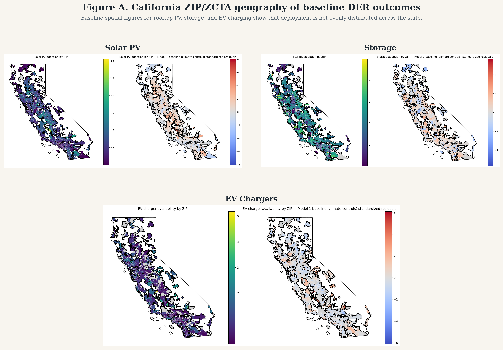
3.5 Descriptive distributions
Before turning to regression coefficients, it is useful to see how uneven the raw distributions already are. Figure 1 shows that DER adoption is uneven across the state for all three technologies. Figure 2 shows that the three DER outcomes are right-skewed, while the socioeconomic context variables span materially different neighborhood conditions. Table 2 then summarizes the analysis sample numerically so the later model comparisons can be interpreted relative to the observed scale of the data.
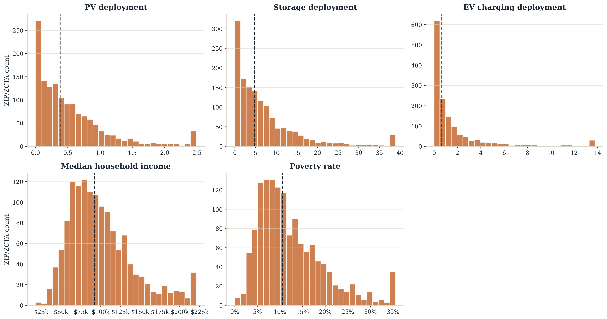
| Variable | Meaning | Scale / notes |
|---|---|---|
y_pv | Solar PV deployment intensity | log(1 + PV kW DC per 1,000 residents) |
y_storage | Battery storage deployment intensity | log(1 + storage MW per 100,000 residents) |
y_chargers | EV charging availability | log(1 + total chargers per 1,000 residents) |
pct_black | Share of ZIP/ZCTA population identifying as Black | ACS 2023 5-year estimate |
pct_hispanic | Share of ZIP/ZCTA population identifying as Hispanic or Latino | ACS 2023 5-year estimate |
pct_asian | Share of ZIP/ZCTA population identifying as Asian | ACS 2023 5-year estimate |
log_median_household_income | Logged median household income | Socioeconomic/adoption-capacity proxy |
poverty_rate | Share of residents below the poverty line | Socioeconomic control |
pct_bachelors_plus | Share of adults with a bachelor’s degree or higher | Education and adoption-capacity control |
ghi_mean_kwh_m2_day_2023 | Mean daily global horizontal irradiance | Solar resource / physical suitability control |
cdd65_2023 | Cooling degree days relative to 65°F | Climate control |
hdd65_2023 | Heating degree days relative to 65°F | Climate control |
log_kwh | Logged annual electricity consumption | Demand/load proxy |
energy_burden_pct | Household energy burden | ZIP-level energy costs as a share of income; used in the energy-burden extension model |
log_energy_gap_per_capita | Logged per-capita energy affordability gap | Scale-adjusted burden-gap measure used alongside energy_burden_pct |
| Variable | N | Mean | Median | P25 | P75 |
|---|---|---|---|---|---|
y_pv | 1,386 | 0.392 | 0.326 | 0.131 | 0.568 |
y_storage | 1,386 | 1.706 | 1.752 | 1.012 | 2.350 |
y_chargers | 1,386 | 0.693 | 0.514 | 0.142 | 1.025 |
pct_black | 1,386 | 0.042 | 0.020 | 0.007 | 0.050 |
pct_hispanic | 1,386 | 0.347 | 0.277 | 0.152 | 0.498 |
pct_asian | 1,386 | 0.119 | 0.066 | 0.023 | 0.156 |
log_median_household_income | 1,386 | 11.440 | 11.434 | 11.169 | 11.705 |
poverty_rate | 1,386 | 0.123 | 0.104 | 0.070 | 0.161 |
pct_bachelors_plus | 1,386 | 0.359 | 0.324 | 0.190 | 0.505 |
ghi_mean_kwh_m2_day_2023 | 1,386 | 5.119 | 5.158 | 4.855 | 5.339 |
log_kwh | 1,218 | 8.480 | 0.000 | 0.000 | 18.275 |
energy_burden_pct | 1,370 | 0.022 | 0.020 | 0.015 | 0.028 |
log_energy_gap_per_capita | 1,370 | 3.791 | 4.351 | 1.072 | 5.650 |
4. Results
The results section begins with the descriptive evidence that most closely parallels the comparison papers: smooth adoption-versus-covariate views and compact baseline regression tables. As shown in Figure 3 and Table 3, the baseline patterns already suggest that race and income are associated with DER outcomes differently across technologies. The later figures then ask whether those patterns persist as the model ladder becomes more demanding. The baseline estimating equation is given in Section 6.6 as Equation (4), and detailed specifications of all models in the ladder can be found in Section 6.7.
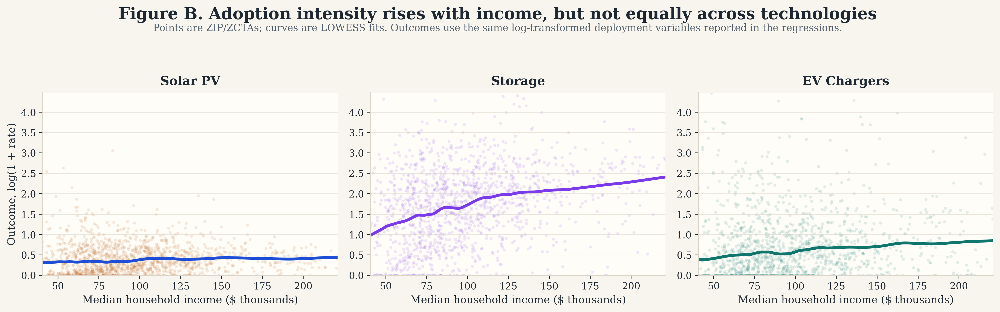
log(1 + rate) scale. Where shaded bands are shown in the LOWESS figures below, they indicate 95% bootstrap confidence intervals around the fitted smooth.| Predictor | y_pv |
y_storage |
y_chargers |
|---|---|---|---|
log_median_household_income |
0.125***(0.038) | 0.779***(0.122) | 0.160(0.098) |
pct_black |
-0.764***(0.109) | -1.651***(0.329) | -0.009(0.343) |
pct_hispanic |
0.014(0.049) | -0.608***(0.126) | -0.403***(0.105) |
pct_asian |
-0.583***(0.048) | -1.784***(0.162) | 0.413***(0.147) |
poverty_rate |
-0.048(0.219) | -0.197(0.562) | 2.004***(0.497) |
| Key climate/resource control | GHI: 0.160***(0.028) | CDD/HDD: n.s. | CDD65: -0.0002***(0.0000) |
| N | 1,386 | 1,386 | 1,386 |
| R² | 0.107 | 0.189 | 0.079 |
p < 0.10, p < 0.05, and p < 0.01.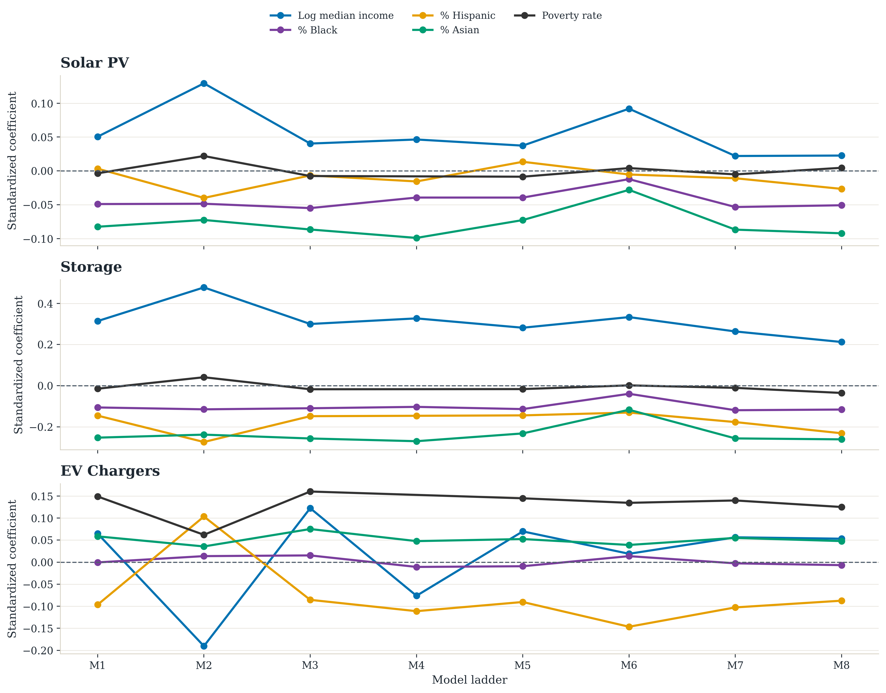
4.1 Baseline patterns across DER types
A consistent pattern across the main specifications is that racial and socioeconomic disparities are not uniform across technologies. Table 3 and Figure 4 show that solar PV and battery storage display the clearest and most persistent negative associations with ZIP/ZCTA shares of Black and Asian residents even after controlling for income and poverty. EV charging shows a different pattern: charger deployment is negatively associated with Hispanic share, positively associated with Asian share in the refreshed baseline model, and strongly positively associated with poverty rate. This makes EV charging substantively different from the PV and storage results and suggests that “charger availability” may be capturing a different mix of infrastructure types and siting logics than household-centered DER adoption. Figure 5 places the four continuous DER outcomes side by side on a common standardized scale.
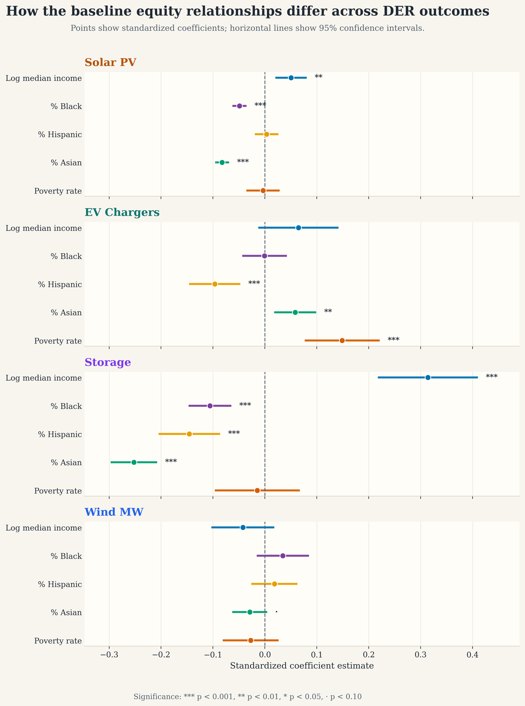
log_median_household_income, pct_black, pct_hispanic, pct_asian, and poverty_rate vary across the continuous DER outcomes, excluding the binary turbine-presence outcome. Source file: ./assets/figures/baseline_der_outcomes_dot_whisker.png.4.2 Solar PV: persistent disparities after resource controls
For solar PV, the baseline specification indicates that ZIP/ZCTAs with higher median household income have higher PV adoption intensity, while ZIP/ZCTAs with larger Black and Asian population shares have substantially lower PV adoption intensity. As summarized in Figure 6, the coefficient on log_median_household_income is positive and statistically significant in the baseline model reported in Table 3, while pct_black and pct_asian are strongly negative. Solar resource potential behaves as expected: ghi_mean_kwh_m2_day_2023 is positive and highly significant, suggesting that physical suitability is an important predictor of deployment.
These disparities remain substantively present as the model becomes more demanding. Adding educational attainment (Model 2; Section 6.7) strengthens the estimated income effect and makes the coefficient on pct_hispanic negative and statistically significant as well, while the negative coefficients on pct_black and pct_asian remain large. In the county-clustered specification (Model 5C; Section 6.7), the income effect attenuates and becomes marginal, but the negative coefficient on pct_asian remains strongly significant and the negative coefficient on pct_black remains statistically distinguishable from zero. In the infrastructure-control and demand-proxy models (Models 7 and 8; Section 6.7), the PV results continue to show large negative associations for pct_black and pct_asian, indicating that these patterns are not explained away by existing energy infrastructure or underlying electricity demand.
Substantively, the solar results are the clearest evidence in the paper that demographic disparities persist even after accounting for major “ability to adopt” and resource variables. The persistence of the race/ethnicity coefficients after controlling for income, poverty, and solar irradiance suggests that the PV gap is not simply a byproduct of lower-income areas having worse solar resource conditions.
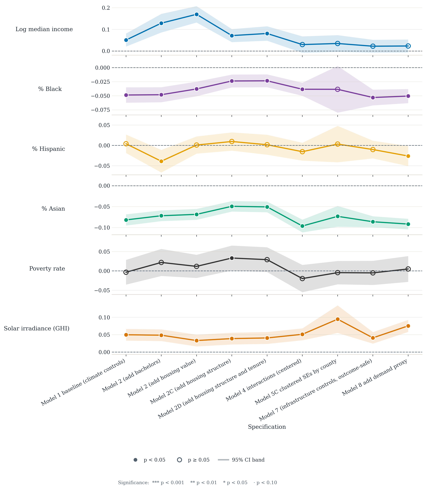
y_pv. This is the closest existing exported figure to a coefficient-stability view of the rooftop PV results across the model ladder. Source file: ./assets/figures/y_pv_robustness.png.4.3 Storage: the strongest and most consistent inequities
Battery storage exhibits the strongest and most stable disparity pattern of the main DER outcomes. Figure 7 shows that in the baseline storage model (Table 3) log_median_household_income is strongly positive, while pct_black, pct_hispanic, and pct_asian are all negative. Compared with the PV results in Section 4.2, the storage coefficients are larger in magnitude and remain negative across nearly every robustness check examined.
This pattern survives the addition of extra socioeconomic controls, clustered standard errors, infrastructure variables, and electricity demand. In Model 2, the income effect becomes even larger, and the negative coefficients on pct_black, pct_hispanic, and pct_asian remain large and precisely estimated. In the county-clustered specification (Model 5C), all three race/ethnicity variables remain negative and statistically significant. The same is true in the infrastructure-control and demand-proxy models. Unlike the EV charging outcome, the storage pattern does not appear to hinge on one especially unstable control or one fragile specification; it is persistent across the model ladder.
I also estimate an additional robustness model, Model 9, that adds y_pv to the most controlled storage specification to ask whether storage inequities persist after conditioning on local PV deployment intensity. The PV term is large and positive (1.143, p < 0.001), as expected for a solar-plus-storage pathway (Table 4), but the race coefficients remain negative and statistically significant: pct_black = -1.297 (p < 0.001), pct_hispanic = -1.003 (p < 0.001), and pct_asian = -1.136 (p < 0.001). This is an important result for the paper’s policy argument because it suggests that the storage gap is not explained solely by unequal PV deployment upstream.
| Predictor | Coefficient | Robust SE | p-value |
|---|---|---|---|
log_median_household_income | 0.533*** | 0.145 | < 0.001 |
pct_black | -1.297*** | 0.286 | < 0.001 |
pct_hispanic | -1.003*** | 0.145 | < 0.001 |
pct_asian | -1.136*** | 0.162 | < 0.001 |
pct_bachelors_plus | -0.611*** | 0.235 | 0.009 |
y_pv | 1.143*** | 0.175 | < 0.001 |
These results suggest that storage adoption is not only income-sensitive but also more unevenly distributed across communities than EV charging and at least as unequal as PV, if not more so. Because storage is often discussed in terms of resilience, backup power, and outage protection, this result has especially important implications for energy equity: the communities with the greatest vulnerability to outages may not be the ones receiving the greatest access to storage.
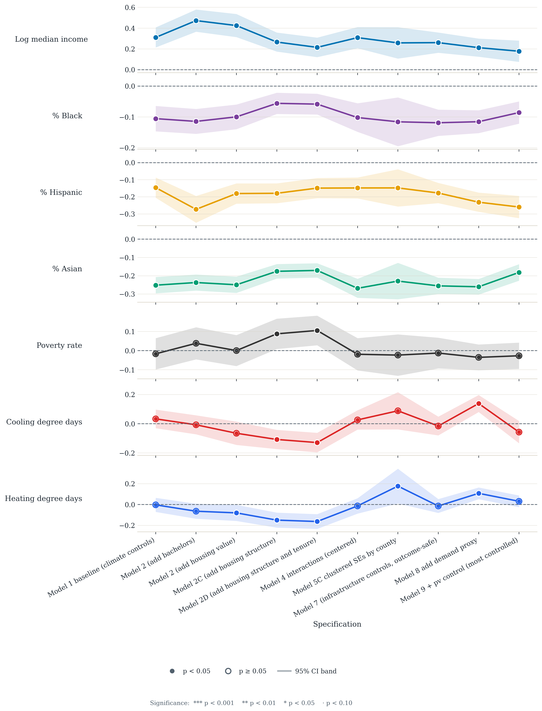
y_storage. Read together with Figure 6 and Table 4, this figure highlights that the storage coefficients are generally larger and more persistent than the PV coefficients. Source file: ./assets/figures/y_storage_robustness.png.4.4 EV charging: aggregate disparities mask charger-type composition
The EV charging results are more complex than the PV and storage findings in Section 4.2 and Section 4.3. As shown in Figure 8, the refreshed aggregate charger baseline in Table 3 has a positive but not conventionally significant income coefficient, a near-zero Black-share coefficient, a negative Hispanic-share coefficient, and a positive Asian-share coefficient. At the same time, poverty_rate is strongly positive. That positive poverty coefficient persists across several robustness checks, including county-clustered, infrastructure-control, and demand-proxy models.
The charger-type decomposition helps clarify what is going on. In the standardized baseline models, the positive aggregate association with poverty_rate is not present for y_level1_chargers, where the coefficient is small and statistically insignificant (0.002, p = 0.584). Instead, the aggregate pattern appears to be driven primarily by y_level2_chargers, where poverty_rate is positive and highly significant (0.166, p < 0.001). For y_dc_fast_chargers, the coefficient on poverty_rate is also positive, but it is imprecisely estimated in the standardized baseline model (0.028, p = 0.187).
Taken together, Figure 9 and Table 5 suggest that the positive poverty-rate relationship in the aggregate charger outcome is composition-driven rather than reflecting uniformly greater charging access across all charger types.
This matters for interpretation. A positive coefficient in the aggregate charger model should not be read as straightforward evidence that poorer communities have better household-serving charging access. The subtype results are more consistent with a siting story in which Level 2 and, to a lesser extent, DC fast infrastructure are concentrated in commercial, corridor, workplace, municipal, or otherwise non-residential locations that may be more common in poorer or more industrial ZIP/ZCTA areas. In that sense, the aggregate charger count is partly measuring infrastructure composition rather than a uniform access benefit.
This is one of the most interesting findings in the paper because it shows that EV charging equity cannot be interpreted from a single aggregate charger metric alone. Disaggregating charger types changes the substantive meaning of the result and suggests that charger composition should be treated as central, not peripheral, in future equity work.
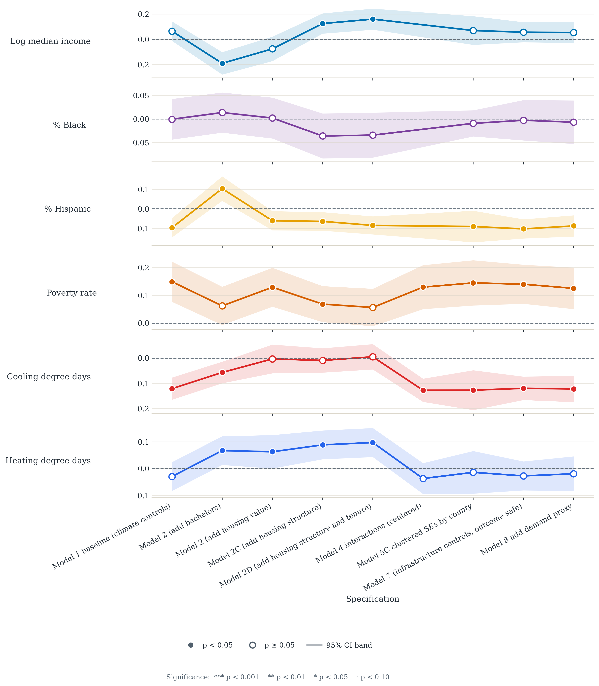
y_chargers. This figure shows how the aggregate EV charging result behaves across specifications, but it does not by itself separate Level 1, Level 2, and DC fast charging. Source file: ./assets/figures/y_chargers_robustness.png.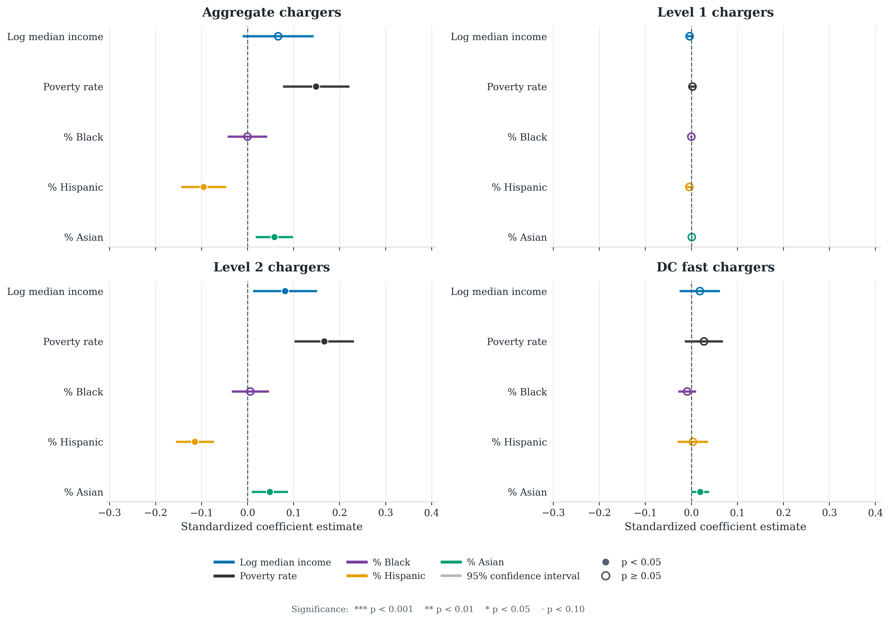
y_level1_chargers, y_level2_chargers, and y_dc_fast_chargers. This figure makes the subtype result explicit: the positive aggregate association with poverty_rate is not present for Level 1 charging and is driven primarily by Level 2 charging. Source file: ./assets/figures/charger_subtype_comparison.png.| Predictor | Aggregate | Level 1 | Level 2 | DC Fast |
|---|---|---|---|---|
log_median_household_income |
0.160(0.098) | -0.010(0.011) | 0.199**(0.088) | 0.045(0.056) |
pct_black |
-0.009(0.343) | -0.004(0.018) | 0.087(0.323) | -0.149(0.155) |
pct_hispanic |
-0.403***(0.105) | -0.018(0.012) | -0.480***(0.089) | 0.011(0.071) |
pct_asian |
0.413***(0.147) | 0.006(0.006) | 0.344**(0.142) | 0.135**(0.068) |
poverty_rate |
2.004***(0.497) | 0.031(0.056) | 2.234***(0.444) | 0.377(0.285) |
| N | 1,386 | 1,386 | 1,386 | 1,386 |
| R² | 0.079 | 0.006 | 0.117 | 0.012 |
4.5 Energy burden outcome results
The energy-burden outcomes provide affordability context for the DER results. In the matched burden sample, mean energy_burden_pct is about 2.2% and the interquartile range runs from roughly 1.5% to 2.8%, while energy_burden_pct is strongly negatively correlated with log_median_household_income (-0.746) and positively correlated with poverty_rate (0.545). The burden variables are therefore best read as a related affordability-stress layer rather than as cleanly orthogonal controls. Figure 10 shows the descriptive gradients linking neighborhood characteristics to both affordability outcomes.
In the refreshed baseline model with energy_burden_pct as the outcome, log_median_household_income is strongly negative (-0.0096, p < 0.001), pct_hispanic is positive (0.0036, p < 0.001), and pct_asian is negative (-0.0077, p < 0.001), while pct_black and poverty_rate are not statistically distinguishable from zero after the included controls. For log_energy_gap_per_capita, income is again negative (-2.161, p < 0.001), while pct_hispanic (1.531, p < 0.001), pct_asian (1.741, p = 0.009), and poverty_rate (2.701, p = 0.039) are positive. Figure 11 shows the DER predictors in the affordability models and Figure 12 traces these coefficients across the model ladder.
These results reinforce the paper’s broader interpretation: affordability stress is itself spatially and demographically structured, but it does not make the DER outcomes interchangeable. PV and storage remain tied to different race and income patterns than aggregate charging, and the charging result still appears to reflect a mixture of infrastructure siting and household-serving access rather than one uniform affordability channel.
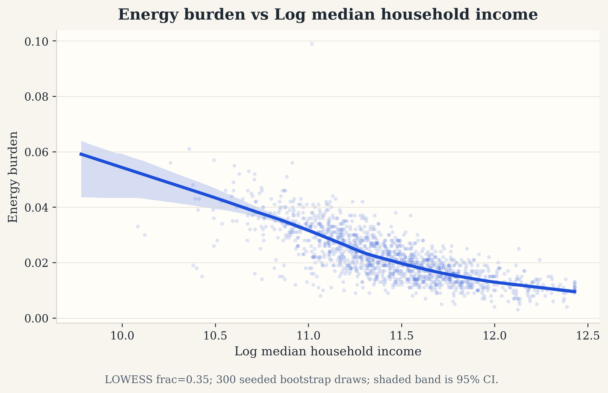
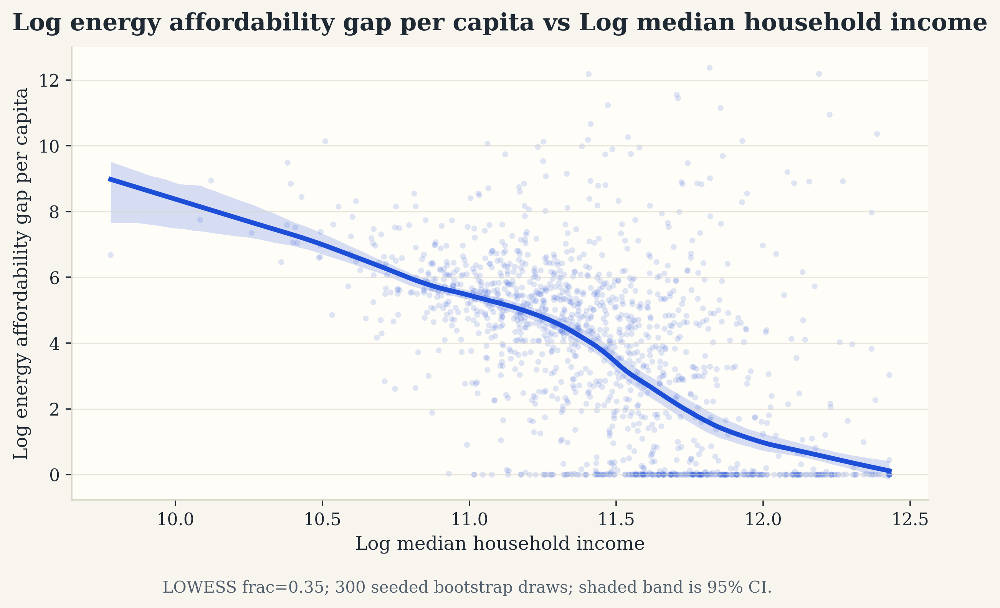
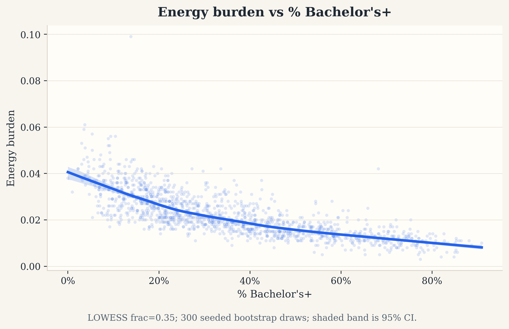
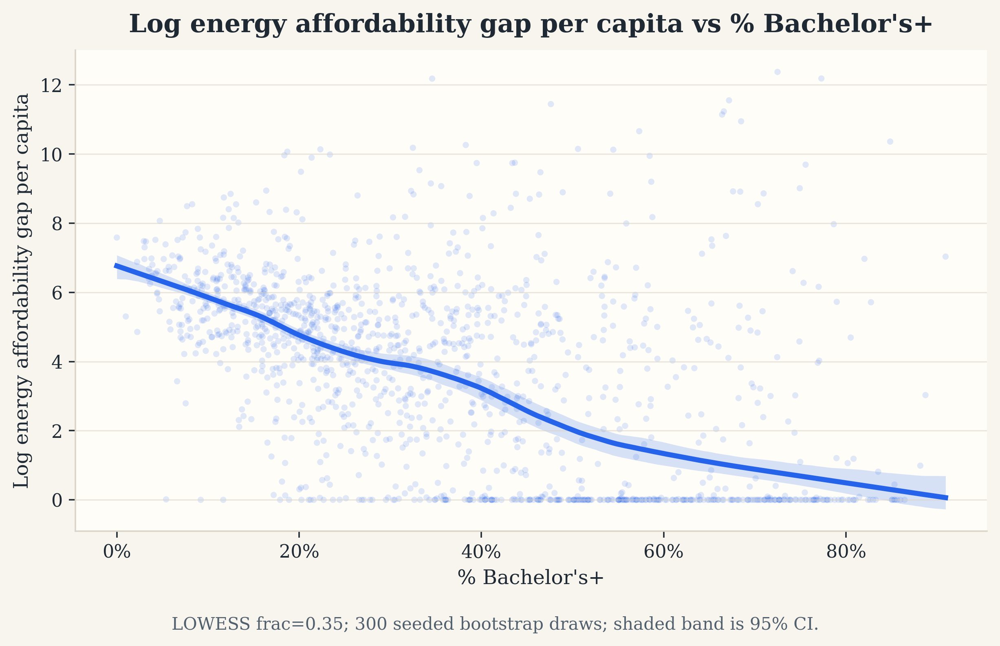
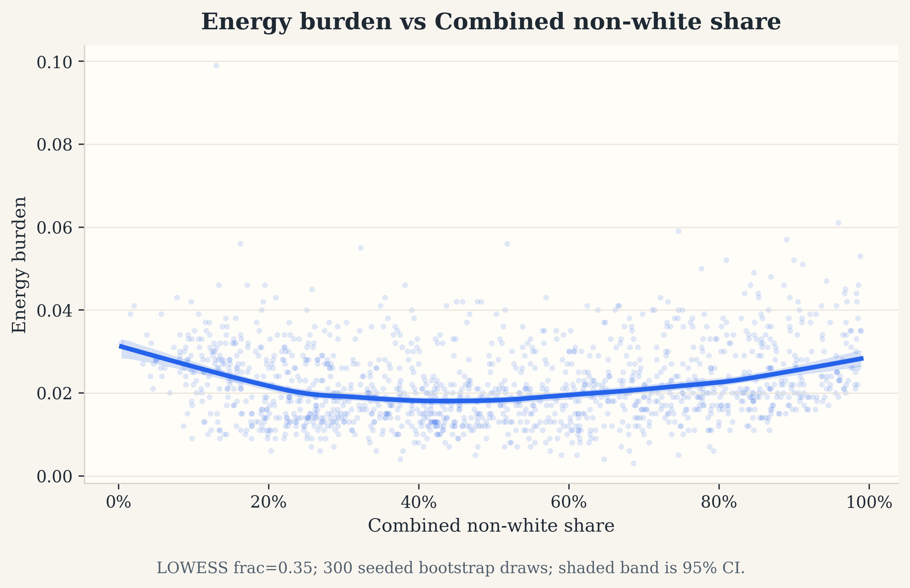
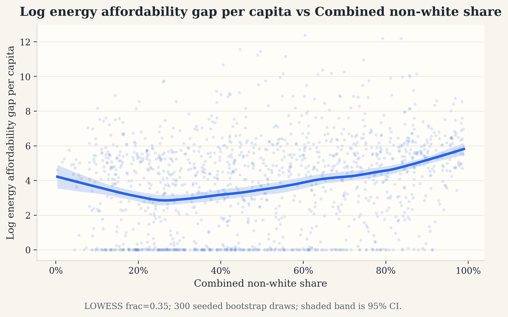
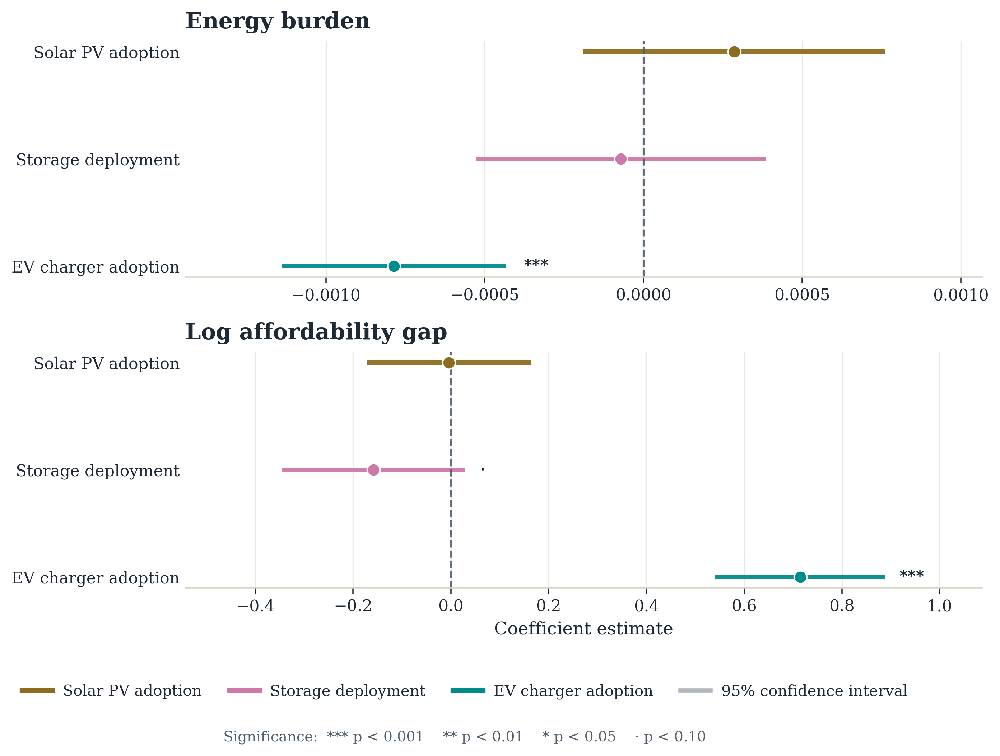
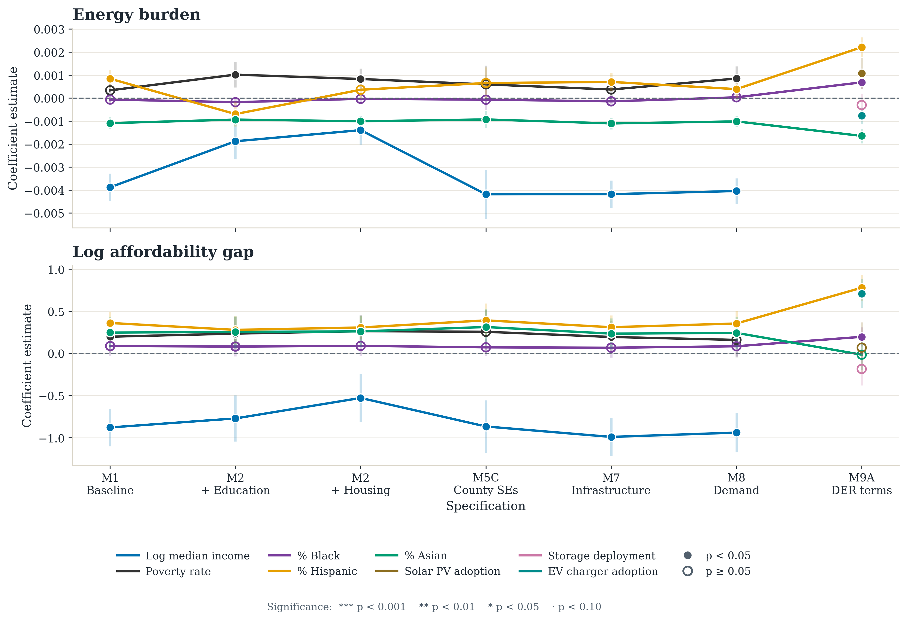
4.6 Descriptive nonlinear gradients
The regression tables (Table 3) summarize conditional associations, but the raw outcome gradients are also informative. Figure 13 plots a combined non-white share against the three main DER outcomes using deterministic LOWESS smoothing with seeded 95% bootstrap confidence intervals. The fitted gradients are negative for all three technologies, with the largest descriptive decline for storage. Over the middle 90 percent of the observed predictor range, the fitted endpoint change is about -0.20 for PV, -1.58 for storage, and -0.02 for aggregate chargers. These are descriptive summaries rather than causal effects, but they reinforce the regression finding that more heavily non-white ZIP/ZCTAs tend to be less served across multiple DER outcomes.
Figure 14 provides the corresponding education view using pct_bachelors_plus. The regenerated deterministic LOWESS audit shows a mildly negative unconditional gradient for PV (-0.06) but positive gradients for storage (0.61) and EV charging (1.17). The corresponding standardized Model 2 charger regression also estimates a positive education coefficient (0.432, p < 0.001). If an earlier figure or notebook export suggested a negative bachelors relationship for EV chargers, that should be read as a stale or specification-specific mismatch rather than the current paper result. In the current generated evidence, bachelor’s attainment is positively associated with aggregate EV charger deployment. The corresponding income gradients are shown in Figure 3.
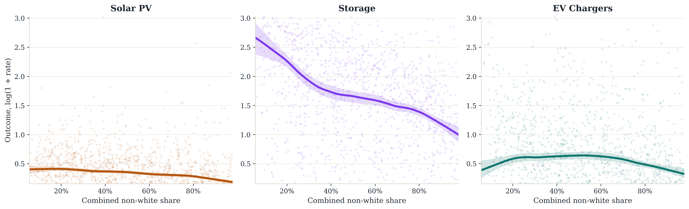
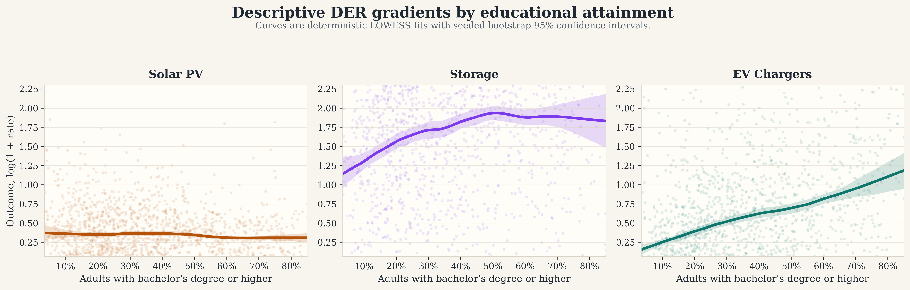
pct_bachelors_plus and the three headline DER outcomes. Shaded ribbons show 95% bootstrap confidence intervals. The education panels are included as descriptive context rather than as a claim that education is the paper’s central explanatory variable.4.7 Exploratory clustering of ZIP/ZCTA types
In addition to the regression ladder, I use a PCA plus K-means clustering exercise to summarize the kinds of ZIP/ZCTA contexts that appear in the statewide sample. This is descriptive rather than causal, but it is useful for showing that the analysis is not comparing one uniform set of neighborhoods. Instead, California ZIP/ZCTAs sort into distinct socioeconomic and DER-deployment profiles.
The cluster map in Figure 15 shows that these profiles are spatially coherent rather than randomly scattered. Table 6 indicates that the clusters differ along multiple dimensions at once: cluster 1 is affluent with a large Asian share and relatively strong charging outcomes; cluster 2 has the highest Hispanic and combined non-white shares together with the highest poverty rate and the weakest charging deployment; and cluster 0 combines comparatively strong PV, storage, and charging outcomes with a larger residual white/other share. These differences are consistent with the broader paper argument that technology access is shaped by bundles of demographic, economic, and infrastructural conditions rather than by one variable in isolation.
| Cluster | N ZIPs | Income | Poverty | Black | Hispanic | Asian | Residual white/other share | PV / 1k | Storage / 100k | Chargers / 1k |
|---|---|---|---|---|---|---|---|---|---|---|
| Blue (1) | 1,218 | $87.5k | 12.9% | 2.5% | 30.1% | 4.1% | 63.3% | 0.89 | 11.00 | 13.66 |
| Orange (2) | 279 | $159.6k | 7.8% | 3.3% | 15.9% | 24.0% | 56.8% | 0.52 | 10.66 | 10.83 |
| Green (3) | 323 | $64.2k | 20.2% | 5.6% | 63.4% | 4.7% | 26.3% | 0.92 | 5.62 | 2.81 |
| Red (4) | 488 | $104.9k | 10.4% | 6.0% | 33.9% | 16.8% | 43.3% | 0.43 | 5.13 | 2.39 |
| Purple (5) | 252 | $74.4k | 13.7% | 0.9% | 14.9% | 1.5% | 82.7% | 0.45 | 10.63 | 5.40 |
4.8 Wind as a contextual comparison outcome
The wind-capacity outcome is useful as contextual comparison but is less central to the paper’s main equity argument. For y_wind_mw, the most consistent predictor is wind_ws50m_mean_2023, which is positive and statistically significant across all examined models (Figure 16). By contrast, the social variables are weaker and less stable. This suggests that wind siting is much more tightly tied to physical resource conditions than the other DER outcomes considered here.
Because wind is less directly comparable to behind-the-meter or consumer-facing DER adoption, it is best treated as supplementary context rather than as one of the paper’s headline findings. The paper therefore does not foreground the binary turbine-presence outcome in the reported results. The cross-validated model comparison for wind is reported in Figure 20.
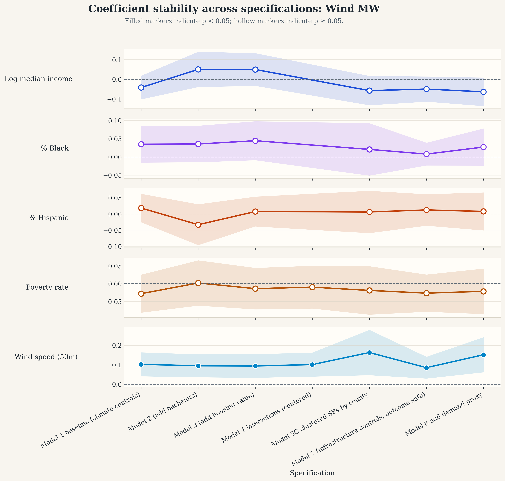
y_wind_mw, included mainly as contextual evidence rather than as a headline equity result. Source file: ./assets/figures/y_wind_mw_robustness.png.4.9 Overall interpretation
Taken together, the results summarized in Figure 4 and Figure 5 suggest that inequity in California’s DER transition is not a single repeated pattern across technologies. Instead, the form of disparity depends on the technology being considered. Solar PV and especially storage show persistent negative associations with several race and ethnicity shares even after major socioeconomic and contextual controls are included. EV charging shows a more mixed pattern: Hispanic population share is associated with lower aggregate charger deployment, Asian population share is positive in the refreshed baseline model, and aggregate charging is also positively associated with poverty, a relationship that appears to be driven mainly by Level 2 charging rather than by Level 1 charging. This indicates that different technologies are shaped by different barriers and siting dynamics, and that a policy solution aimed at “DER equity” in the abstract may miss the fact that solar, storage, and EV charging do not reproduce inequity in exactly the same way.
5. Discussion
5.1 What persists and what changes across DER types
The most important substantive finding is that the clean energy transition does not reproduce inequality in the same way across technologies. Solar PV shows persistent racial and socioeconomic patterning (Section 4.2), but storage appears even more unequal and more stable across specifications (Section 4.3), including after conditioning on local PV deployment (Table 4). EV charging, by contrast (Section 4.4), does not fit a simple underserved-versus-served story. Instead, the aggregate charging measure mixes together infrastructure types that likely serve different users and are governed by different siting logics. The paper’s contribution is therefore not only to show that disparities exist, but to show that the meaning of those disparities changes by technology.
This matters conceptually. A community that appears relatively “served” on one aggregate infrastructure metric may still be underserved in the specific DER benefits that matter most, such as bill savings from rooftop PV, resilience from storage, or residentially usable charging access. In that sense, the paper supports a more technology-specific approach to energy equity measurement and a race-aware approach to DER planning rather than a purely race-neutral framework.
5.2 Plausible mechanisms
Several mechanisms are consistent with the observed patterns, though the analysis does not identify them causally. For rooftop PV, the persistence of negative coefficients after controlling for income is consistent with barriers beyond household income alone, including roof access, housing tenure, installer market penetration, credit constraints, or permitting and interconnection frictions. For storage, the larger and more stable disparities are consistent with the fact that storage often involves higher capital costs, stronger dependence on bundled solar-plus-storage adoption pathways, and programmatic complexity that may advantage already well-positioned households and communities.
The energy-burden outcome models add a household stress layer to this interpretation. Higher burden can indicate that communities face less disposable income, weaker financing capacity, or greater exposure to bill volatility even when median income and poverty are already included. Because the burden outcomes are themselves spatially and demographically patterned, they point to an additional affordability pathway through which clean-energy benefits may be unevenly distributed.
The EV charging results point to a different mechanism story. The positive poverty association in the aggregate charging outcome is not visible for Level 1 charging and appears to be driven primarily by Level 2 charging (Figure 9 and Table 5). The refreshed baseline also makes the Black-share association much weaker than before, while the Hispanic-share coefficient remains negative and the Asian-share coefficient is positive. That pattern is more consistent with charger composition and siting than with broad household-serving access. A key implication is that aggregate charger counts are not neutral measures of equitable access. They may capture infrastructure abundance in ways that overstate practical charging access for residents, especially where charger types and host settings differ.
The clustering exercise adds another descriptive layer to this story (Section 4.7). More affluent clusters with higher residual white/other shares and lower poverty tend to have stronger charger and storage outcomes, while the high-Hispanic, high-poverty cluster shows the weakest charging outcomes (Table 6 and Figure 15). Those spatial profiles are descriptive, but they are consistent with the broader argument that race, income, and existing energy-system context are jointly structuring where DER benefits accumulate.
5.3 Policy relevance
The policy implication is not simply that disadvantaged places need “more DERs.” Rather, different technologies appear to require different equity strategies. For rooftop solar, the persistence of disparities after observed controls suggests the continued importance of targeted incentives, community-solar expansion, financing support, and outreach policies that reduce adoption frictions in underserved communities. For storage, the stronger disparities suggest that resilience-oriented subsidy programs, backup-power programs, and community-serving storage deployments may need sharper equity targeting if storage benefits are to reach communities that face higher vulnerability to outages, wildfire-related shutoffs, and climate-related disruptions.
For EV charging, the results suggest that policymakers should distinguish much more carefully between charger counts and usable charging access. A place with many chargers is not necessarily a place with equitable residential charging opportunities. Programs focused on multifamily charging, curbside or neighborhood charging, renter-serving infrastructure, and targeted deployment outside purely commercial corridors may therefore matter more than aggregate public charger deployment targets alone. More broadly, the findings suggest that clean energy equity policy should be technology-specific rather than assuming that one design principle can cover PV, storage, and charging simultaneously.
5.4 Broader implications for energy burden and community resilience
These findings also matter beyond adoption statistics themselves. DERs can alter household bills, outage resilience, air-quality exposure, and who benefits from the clean-energy transition. If rooftop PV, storage, and residentially useful charging remain concentrated in already advantaged communities, then lower-income and more heavily non-white communities may face a double burden: higher exposure to outage risk and energy burden alongside lower access to technologies that buffer those risks. That is one reason the race results matter for policy even in a non-causal paper. If race remains statistically significant after the main socioeconomic controls are added, then a purely race-neutral planning frame may miss communities that are persistently underserved in practice.
The energy-burden connection differs by technology (Section 4.5). For rooftop PV, lower deployment in communities with larger Black and Asian population shares matters because PV is one of the main household-level pathways through which customers can reduce net electricity costs or hedge against future rate increases. For storage, the Model 9 result (Table 4) is especially relevant: even after conditioning on local PV deployment, storage disparities remain, which means the resilience benefit associated with backup power is not simply following solar access in an equitable way. In high-burden communities, that can compound vulnerability because households may face both higher bill stress and weaker access to outage protection.
EV charging raises a related but distinct burden issue. Transportation electrification can lower fuel and maintenance costs for some households, but only if charging is practically usable, affordable, and located near daily routines. The positive poverty-rate coefficient in aggregate charger models therefore should not be interpreted as evidence that higher-poverty communities are necessarily better positioned to benefit from EV adoption. If chargers are concentrated in commercial, workplace, corridor, municipal, or other non-residential settings, then the count may represent infrastructure presence without equivalent household-serving access, particularly for renters, multifamily residents, and households without reliable home charging.
The present paper does not include a dedicated transit, corridor, tenure, or charger-host dataset, so it cannot fully unpack why charging is more prevalent in some higher-poverty ZIP/ZCTAs. That remains an important extension. But the current evidence is already sufficient to show that aggregate infrastructure counts should not be mistaken for equitable access, and that future DER planning needs to distinguish commercial siting from household-serving benefit. Connecting DER deployment to energy burden therefore requires more than asking where assets are installed; it requires asking whether the communities with the highest bill, resilience, and electrification pressures can actually use the technologies being counted.
5.5 Potential policy measures to address inequities
The results imply different levers for different actors, and different emphases by technology. The cross-technology divergence argues against a single “DER equity” mandate. PV, storage, and charging require distinct instruments, and measuring success by undifferentiated deployment counts risks mistaking infrastructure presence for equitable benefit.
Lawmakers and public-sector agencies. Racial disparities persist after income controls, so eligibility rules keyed only to income or to generic “disadvantaged community” designations will miss communities that are underserved on race-correlated dimensions. Storage warrants the sharpest targeting. Resilience rebates such as successors to SGIP, backup-power provisioning, and community-storage programs should weight toward communities exposed to outages and wildfire shutoffs, since the Model 9 result (Table 4) shows the storage gap does not follow PV access. For charging, procurement targets should measure usable residential access through multifamily, curbside, and renter-serving deployment rather than aggregate charger counts, which the subtype results (Table 5 and Figure 9) show can overstate access.
Grid operators and regulators. Adoption is partly gated by hosting-capacity and interconnection frictions that are themselves socially patterned (Brockway et al. 2021; Aydin et al. 2025). Equity should enter distribution planning directly. Operators can publish hosting-capacity and interconnection-queue outcomes disaggregated by community demographics, and pilot fairness-aware hosting-capacity allocation so that grid upgrades do not concentrate where adoption is already high.
Private utilities and market actors. Persistent PV and storage gaps after income controls point to non-price barriers: installer market penetration, financing access, and split incentives for renters. Third-party ownership, on-bill and inclusive financing, community solar-plus-storage, and installer outreach in low-penetration areas can address adoption frictions that subsidies do not, as long as program design does not re-advantage households that are already well positioned.
6. Methods
6.1 Empirical Approach
This paper uses a cross-sectional regression framework to examine whether racial/ethnic and socioeconomic differences are associated with distributed energy resource deployment intensity across California ZIP/ZCTA areas. The main goal is not pure prediction. Instead, it is to test whether disparities in DER adoption persist after accounting for differences in adoption capacity, geography, physical suitability, institutional context, and observed energy-system conditions.
To do this, I estimate a consistent sequence of models for each DER outcome. This stepwise model ladder makes the results easier to interpret because changes in the coefficients of interest can be linked to specific added controls rather than to one opaque saturated specification. Section 6.6 states the baseline equation, Section 6.7 defines each rung of the ladder, and Figure 4 shows the resulting coefficient paths. It also supports direct comparison across technologies, which is central to the paper’s multi-DER framing.
The three main outcomes are ZIP/ZCTA-level deployment intensity for rooftop solar PV, battery storage, and EV charging. Each is population-normalized and transformed using a log(1 + rate) specification to reduce skew and retain observations with zero deployment. The main explanatory variables of interest are racial/ethnic composition measures and socioeconomic indicators. I then add contextual controls that capture climate, renewable resource potential, utility territory, built-environment structure, and broader installed-energy context.
Because the analysis is ecological and cross-sectional, the results are interpreted as area-level disparities rather than as individual household adoption behavior. The coefficients therefore describe how DER deployment differs across ZIP/ZCTA areas with different demographic and socioeconomic characteristics, conditional on the included controls. They should not be read as causal effects of race or income on any individual household’s technology adoption decision.
6.2 Dataset Construction and Sample
The analysis uses a California ZIP/ZCTA-level dataset created by merging multiple DER source files with demographic, climate, utility, and infrastructure controls. The final merged file combines measures of solar PV capacity, battery storage capacity, and EV charging infrastructure with American Community Survey variables and place-based controls.
DER measures are first constructed separately by technology and then aggregated to the ZIP/ZCTA level. Solar PV capacity is derived from Tracking the Sun installation records. Battery storage is built from a California storage dataset containing location and capacity information. EV charging infrastructure is constructed from charger-level records that include charger type and location; charger rows without a valid source ZIP are excluded from ZIP/ZCTA charger outcomes rather than reassigned using latitude/longitude, while valid source-ZIP rows are retained even if descriptive fields are blank or say No information. Figure 1 visualizes the resulting statewide geography and also makes clear that some ZIP/ZCTAs are absent because the underlying merged sample is incomplete in those places.
After source-specific cleaning, the DER measures are merged with contextual predictors. Demographic and socioeconomic variables come from the 2023 American Community Survey 5-year estimates and include total population, median household income, median housing value, educational attainment, poverty, and race/ethnicity shares. Climate and renewable resource controls are derived from NASA POWER and include temperature-based measures, degree days, solar irradiance, and wind resource variables. Utility territory is assigned using a ZIP-to-utility spatial crosswalk, and electricity demand is proxied using annualized utility usage data aggregated to ZIPs.
The unit of analysis is the ZIP/ZCTA. I use ZCTAs because they provide the most practical common geography across the available DER and demographic sources. The study is designed as a 2023 cross-sectional snapshot, using the most recent data aligned as closely as possible to that year. In the regression stage, ZIP/ZCTAs with total population below 1,000 are excluded from outcome construction to avoid unstable per-capita rates in very small areas. Table 2 summarizes the resulting analysis sample.
6.3 Outcome Variables
To make the outcomes comparable across technologies, each DER measure is converted into a population-normalized deployment intensity metric and then transformed using log(1 + x). This helps reduce skew and allows ZIP/ZCTAs with zero deployment to remain in the sample.
The three main outcomes are defined as follows. Their definitions and units are also collected in Table 1.
For EV charging:
chargers_per_1k = (total_chargers × 1000) / population
y_chargers = log(1 + chargers_per_1k)
(1)
For solar PV:
pv_kW_per_1k = (PV_system_size_DC × 1000) / population
y_pv = log(1 + pv_kW_per_1k)
(2)
For battery storage:
storage_MW_per_100k = (storage_capacity_mw × 100000) / population
y_storage = log(1 + storage_MW_per_100k)
(3)
Storage is scaled per 100,000 residents rather than per 1,000 in Equation (3) because storage deployment is much smaller and more uneven at the ZIP level, so the larger denominator keeps the raw rate in a more interpretable range before transformation.
In supplementary analysis, I also examine more disaggregated charging outcomes, including Level 1, Level 2, and DC fast chargers separately, along with a wind-capacity outcome used mainly as contextual comparison. The core paper, however, focuses on the three outcomes above.
6.4 Key Explanatory Variables
The main explanatory variables fall into two groups: racial/ethnic composition and socioeconomic status.
The race/ethnicity variables are ZIP/ZCTA-level shares of the population identifying as Black, Hispanic/Latino, and Asian. These variables are included to test whether DER deployment differs systematically across communities in ways that are not fully explained by socioeconomic conditions alone. For descriptive LOWESS plots, I also summarize these patterns using a combined non-white share, but the regressions keep the disaggregated race variables to avoid collapsing distinct demographic patterns into one coefficient.
The socioeconomic variables are intended to proxy for adoption capacity and broader social advantage. The core measures are log median household income and poverty rate. Additional socioeconomic variables used in extended specifications include percent bachelor’s degree or higher and log median housing value. Education is therefore treated primarily as a control rather than as the paper’s headline predictor: it captures information, housing-market position, and adoption capacity that overlap with income, but the central research question is whether race remains statistically associated with DER deployment after those proxies are included.
The central empirical question is whether the race/ethnicity coefficients weaken substantially once these socioeconomic proxies are included, or whether meaningful disparities remain after accounting for them. If the race coefficients remain negative and statistically distinguishable from zero in richer models, that is evidence against a purely race-neutral account of observed DER deployment patterns.
6.5 Contextual Controls
I include several categories of place-based controls to account for non-demographic factors that may shape DER deployment. First, I include climate and resource controls. Baseline models use heating and cooling degree days to capture broad climatic differences across California. Alternative specifications use more technology-specific contextual variables, including global horizontal irradiance for solar PV and wind speed measures for wind-related outcomes. Temperature controls are also used in some robustness checks.
Second, I include institutional controls through utility territory fixed effects. Utility territories matter because rates, interconnection processes, incentive administration, and historical investment can differ substantially across service areas. Including utility fixed effects helps isolate within-utility differences in deployment.
Third, I include broader geographic controls in selected specifications, including total population, latitude and longitude, and county-based adjustments. These help account for large-scale regional gradients and spatially correlated unobservables. When I refer below to county-clustered standard errors, I mean that inference is adjusted for within-county error correlation rather than assuming each ZIP/ZCTA contributes an independent disturbance.
Fourth, I include electricity demand and infrastructure-context controls in later models. Annual electricity consumption serves as a proxy for underlying load and commercial activity, especially relevant for EV charging. Existing plant, wind, and storage assets are used as installed-energy-context proxies. They are informative about the local energy landscape, but they are not full direct measures of grid infrastructure, feeder capacity, or hosting capacity.
6.6 Baseline Regression Specification
The main estimation approach is ordinary least squares regression using the transformed ZIP/ZCTA-level deployment outcomes. The baseline specification is:
y_z = β_0 + β_1 Income_z + β_2 Black_z + β_3 Hispanic_z + β_4 Asian_z + β_5 Poverty_z + γX_z + ε_z
(4)
where y_z is the DER deployment outcome in ZIP/ZCTA z, Income_z is log median household income, Black_z, Hispanic_z, and Asian_z are race/ethnicity population shares, Poverty_z is the ZIP/ZCTA poverty rate, X_z is a vector of contextual controls for ZIP/ZCTA z, and ε_z is the error term. Estimates of Equation (4) for the three headline outcomes are reported in Table 3.
All models are estimated with heteroskedasticity-robust HC1 standard errors by default. In plain language, HC1 means the standard errors are adjusted so inference is less sensitive to unequal residual variance across ZIP/ZCTAs. In selected specifications, I also cluster standard errors at the county level to allow for within-county correlation in errors.
Rather than relying on one preferred specification, I estimate a staged model ladder. This matters because the paper is not only asking whether disparities appear in one model, but whether they persist as increasingly demanding controls are introduced. The modeling objective is therefore coefficient stability and interpretability across related specifications, not selection of a single best predictive model.
6.7 Model Series
Baseline Equity Specification
The baseline model includes log median household income, race/ethnicity shares, poverty rate, and a limited set of climate controls. This model provides a first-pass estimate of area-level disparities after accounting for basic socioeconomic status and broad geographic conditions.
Exported name: Model 1 baseline (climate controls)
y_z = β_0 + β_1 Income_z + β_2 Black_z + β_3 Hispanic_z + β_4 Asian_z + β_5 Poverty_z + γ Climate_z + ε_z
(5)
Additional Socioeconomic Controls
I then add another socioeconomic proxy, typically percent bachelor’s degree or higher or log median housing value, to test whether the race/ethnicity coefficients are sensitive to richer measures of social and housing advantage. This step is important because income alone may not fully capture adoption capacity.
Exported names: Model 2 (add bachelors); Model 2 (add housing value)
y_z = β_0 + β_1 Income_z + β_2 Black_z + β_3 Hispanic_z + β_4 Asian_z + β_5 Poverty_z + β_6 SESextra_z + γ Climate_z + ε_z
(6)
Alternative Climate and Resource Controls
To test whether results depend on a particular way of capturing geographic context, I estimate alternative versions of the baseline model with different climate or physical-suitability controls. For PV, this includes solar irradiance. For some outcomes, I compare degree-day controls to mean temperature-based controls. For wind-related outcomes, I use wind resource measures.
Exported names: Model 3A (HDD + CDD); Model 3B (temp only); Model 3C (GHI only)
y_z = β_0 + β_1 Income_z + β_2 Black_z + β_3 Hispanic_z + β_4 Asian_z + β_5 Poverty_z + γ ResourceClimateAlt_z + ε_z
(7)
Race-by-Income Interactions
I test whether the income gradient in DER deployment differs across communities by including interaction terms between income and race/ethnicity shares. These variables are mean-centered before interaction so that the main effects remain interpretable.
Exported names: Model 4 interactions (centered); Model 4R interactions (centered)
y_z = β_0 + β_1 Income_c,z + β_2 Black_c,z + β_3 Hispanic_c,z + β_4 Asian_c,z + β_5 (Income_c,z × Black_c,z) + β_6 (Income_c,z × Hispanic_c,z) + β_7 (Income_c,z × Asian_c,z) + γX_z + ε_z
(8)
Utility Fixed Effects and Inference Robustness
I estimate specifications with utility territory fixed effects to absorb institutional differences across service areas. I also estimate county-clustered standard errors as a robustness check for inference.
Exported names: Model 5 utility FE; Model 5C clustered SEs by county
y_z = β_0 + β RaceSES_z + γX_z + δ_utility + ε_z, with HC1 or county-clustered SEs
(9)
Geographic Robustness
Additional specifications introduce latitude and longitude or county fixed effects to test whether the main patterns are simply reflecting broad regional gradients within California rather than more local disparities.
Exported names: Model 6A lat and lon; Model 6B county fe
y_z = β_0 + β RaceSES_z + γX_z + θ Geo_z + ε_z
(10)
y_z = β_0 + β RaceSES_z + γX_z + δ_county + ε_z
(11)
Infrastructure Context Controls
I add measures of existing energy infrastructure to examine whether local deployment patterns are partly explained by the surrounding energy-system context. These models test whether communities with more existing infrastructure also mechanically appear to have more DER deployment.
Exported names: Model 7 (infrastructure controls, outcome-safe); Model 7 (per-capita infrastructure controls)
y_z = β_0 + β RaceSES_z + γX_z + λ Infrastructure_z + ε_z
(12)
Electricity Demand Controls
Finally, I add a demand proxy based on annual electricity consumption. This is particularly relevant for EV charging, where infrastructure deployment may track commercial activity and underlying load as much as residential adoption potential.
Exported name: Model 8 add demand proxy
y_z = β_0 + β RaceSES_z + γX_z + λ Infrastructure_z + ϕ Demand_z + ε_z
(13)
Outcome-Specific DER Cross-Control and Extension Models
Model 9 (storage, with PV control) adds local PV deployment to the storage model, to test whether storage disparities persist after conditioning on upstream PV deployment. Equation (14) states the combined specification. Model 9A (predicting burden) instead adds DER deployment terms to the energy-burden outcome models, to examine whether DER deployment is associated with household energy burden or affordability gaps. These are two distinct specifications with different outcomes and different control sets; they are labelled separately in all exported tables and figures.
Exported names: Model 9 + pv control (most controlled); Model 9A (predicting burden)
y_z = β_0 + β RaceSES_z + γX_z + λ Infrastructure_z + ϕ Demand_z + ψ DER_z + ε_z
(14)
Because these two variants differ in both outcome and control set, I treat them as targeted robustness and extension models rather than a single, uniform specification applied across all outcomes. Estimates for the storage variant are reported in Table 4.
The coefficient paths these specifications produce are summarized in Figure 4. Taken together, this model ladder allows me to ask a structured question: do racial/ethnic disparities shrink meaningfully once I account for socioeconomic status, geography, utility context, and infrastructure, or do they remain persistent across specifications?
6.8 Estimation and Inference
The main quantities of interest are the coefficients on the race/ethnicity variables and how those coefficients change across specifications. I compare both the direction and relative magnitude of these coefficients across solar PV, storage, and EV charging outcomes.
The interpretation is comparative rather than individual-level. A negative coefficient on a racial/ethnic population share does not imply anything about the behavior of an individual resident. Instead, it indicates that ZIP/ZCTA areas with larger shares of that population tend to have lower DER deployment intensity, conditional on the controls in the model. If the coefficient becomes smaller after additional controls are added, that suggests part of the disparity is explained by those added factors.
This comparison across DERs is central to the paper. If the same communities appear underserved across multiple technologies, that points to broader structural inequities in the clean energy transition. If the patterns differ by technology, that suggests more technology-specific barriers.
6.9 Robustness and Diagnostic Checks
In addition to the main regression ladder, I conduct several supporting checks. I examine variance inflation factors (VIFs) to monitor multicollinearity across specifications, compare alternative climate and resource control blocks to test the stability of the results, estimate county-clustered standard errors to assess whether statistical significance is sensitive to local spatial clustering, and generate descriptive maps, distribution plots, and coefficient comparison figures to visualize both the raw patterns and the modeled results (Figure 1, Figure 2, and Figure 4).
VIF screening informs the model inventory, but it is not used as a rigid mechanical inclusion rule. Some richer specifications show elevated VIF values, especially once multiple SES and contextual controls are introduced. I retain predictors when they correspond to substantively distinct constructs that are central to the modeling objective rather than treating any moderate VIF increase as evidence that the model is unusable. The relevant question for this paper is therefore whether the coefficients of interest remain interpretable and stable, not whether every rich specification minimizes collinearity by design.
I also estimate energy-burden outcome models using energy_burden_pct and log_energy_gap_per_capita. The purpose is to describe how household utility-cost stress and affordability pressure are patterned across the same ZIP/ZCTA covariates used in the DER models. I treat energy_affordability_index as a sensitivity-only measure because it is closely related to income and poverty in the merged sample.
In exploratory analysis, I compare linear specifications to more flexible predictive models, including polynomial regression, random forest, and gradient-boosted trees, using cross-validation (Figure 17, Figure 18, and Figure 20). These models are not the basis for the paper’s main claims. Instead, they serve as a diagnostic check on whether simple linear models are missing strong nonlinear structure. The substantive conclusions remain grounded in the interpretable OLS results.
6.10 Methodological Limitations
This methodology is designed to identify area-level associations, not causal effects. The results should therefore be interpreted as descriptive disparities conditional on observed controls. Unmeasured confounding may remain, especially around housing tenure, installer presence, permitting, and technology-specific incentive access.
There are also limitations tied to geography and measurement. ZIP/ZCTA aggregation is a practical compromise that enables multi-DER harmonization, but it can blur within-area heterogeneity and raises the usual ecological inference problem. In addition, some source files require spatial assignment or manual cleaning steps, which may introduce measurement error. Even so, using a consistent geography and model structure across technologies provides a useful basis for comparative equity analysis.
7. Limitations
This study is designed to identify area-level conditional associations, not causal effects (Section 6.8). The regressions show how DER deployment differs across ZIP/ZCTA areas with different observed characteristics, but they do not establish that demographic composition causes those differences. Unmeasured confounding may remain, especially around housing tenure, roof suitability, installer availability, local permitting conditions, program participation, and technology-specific incentive access.
The use of ZIP/ZCTA geography is a practical strength for harmonizing multiple datasets, but it also introduces limitations. ZIP/ZCTAs can blur substantial within-area heterogeneity, and ecological inference problems remain. The analysis therefore cannot describe the behavior of individual households or residents. In addition, some raw source files required spatial assignment from latitude and longitude, manual ZIP corrections, or source-specific cleaning decisions, all of which may introduce measurement error. For EV chargers specifically, rows without valid source ZIPs are excluded from ZIP/ZCTA outcomes rather than rescued from coordinates (Section 6.2), so the charger outcomes should be interpreted as valid-source-ZIP charger records.
There are also technology-specific measurement limitations. Aggregate charger counts mix charger types and host contexts that may not represent equivalent forms of access. The charger-type decomposition (Table 5 and Figure 9) helps, but even that does not fully distinguish residential, workplace, corridor, and municipal use cases. Wind outcomes are also less directly comparable to behind-the-meter technologies, which is why the paper treats wind capacity as supplementary context rather than a headline equity result (Section 4.8; Figure 16).
Finally, the paper is a California 2023 cross-sectional snapshot. California is substantively important as a large and policy-active clean energy market, but the results may not generalize mechanically to other states, years, or regulatory contexts. Future work would benefit from longitudinal analysis, stronger measures of tenure and housing structure, more direct data on technology-specific access mechanisms, and additional place-based variables such as transit and corridor intensity to sharpen the interpretation of charger siting patterns.
8. Conclusion
This paper asks whether racial and socioeconomic disparities in distributed energy resource deployment persist across California ZIP/ZCTA areas (Section 1) once observed socioeconomic, geographic, institutional, and infrastructure controls are added. The answer is yes, but the form of disparity depends strongly on the technology being considered. Solar PV and especially battery storage remain unequally distributed across communities even in more demanding specifications (Section 4.2 and Section 4.3), while EV charging shows a more complicated pattern (Section 4.4) in which aggregate charger counts can obscure meaningful differences across charger types.
The broader lesson is that clean energy inequality is not one phenomenon (Section 4.9). Technologies that appear under the same DER umbrella deliver different benefits, face different barriers, and are deployed through different market and institutional pathways. If equity is measured too coarsely, policy can mistake infrastructure counts for access, or progress in one technology for progress in another. A more credible clean energy transition therefore requires not only more deployment, but better measurement of who can actually use, benefit from, and rely on each technology.
Viewed in that light, California serves as both an empirical case and an early warning. As decarbonization expands, the question is not only how quickly DERs diffuse, but whether the benefits of that diffusion are structured in ways that reduce inequality or reproduce it in new forms. This paper’s evidence suggests that answering that question requires a multi-DER equity lens rather than a single-technology one.
Appendix: Additional Robustness Visuals
This appendix keeps the heavier visual material out of the main results flow while still making the broader model inventory easy to inspect. It includes representative model-comparison and spatial outputs for the main reported outcomes plus the supplementary wind-capacity context (Figure 17 through Figure 20).
Outcome-specific model comparisons

Figure 17. Storage adoption: cross-validated predictive comparison of linear and nonlinear models. The same appendix folder also includes the EV charging (Figure 18) and wind (Figure 20) comparison exports for side-by-side review.
EV charging model comparison

Figure 18. Aggregate EV charging: cross-validated predictive comparison of linear and nonlinear models, included here rather than inline so the main section can focus on the headline robustness (Figure 8) and subtype composition (Figure 9) figures.
Representative baseline spatial maps
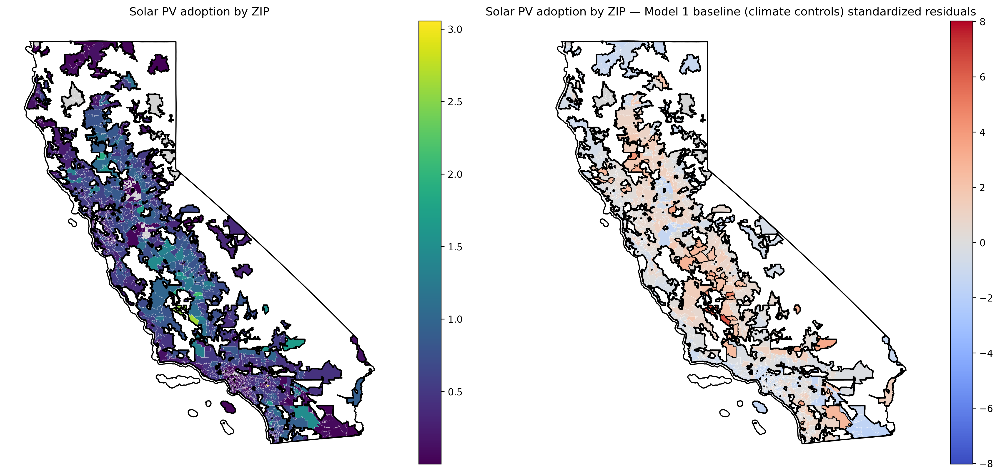
Figure 19. Representative baseline spatial output for rooftop PV: observed adoption and Model 1 standardized residuals by ZIP/ZCTA. Matching storage and charging spatial maps are linked in the same appendix asset folder; the statewide observed geography for all three outcomes is shown in Figure 1.
Supplementary wind comparison

Figure 20. Wind capacity: cross-validated predictive comparison of linear and nonlinear models. Wind remains supplementary in the paper (Section 4.8), but the export is preserved here as a contextual benchmark against the consumer-facing DER outcomes.
Statistical robustness and diagnostics
The remainder of the appendix reports diagnostic checks on the estimating equations rather than additional descriptive figures (Table 7, Table 8, and Table 9). These do not alter any point estimate; they characterise how much confidence the standard errors deserve and where the specification is strained. Section 6.9 describes the diagnostic strategy these checks implement.
Multicollinearity diagnostics
Variance inflation factors for the Solar PV models (Table 7), chosen to show both a well-conditioned specification and a poorly conditioned one. The baseline is comfortable throughout. Adding log housing value inflates log median income from 3.10 to 4.95, which is the overlap between income, poverty and housing value that a reviewer would expect to see quantified. The housing structure and tenure controls in Model 2D stay under 6 despite owner-occupancy correlating -0.83 with multifamily share. The per-capita infrastructure specification is the cautionary case: wind MW per 100k and turbines per 100k are two measures of the same quantity and reach 27.4, so their individual coefficients should not be read separately. VIF tables for every model and outcome are exported alongside the coefficient tables.
| Predictor | M1 baseline | M2 + housing value | M2D + structure/tenure | M7 per-capita infrastructure |
|---|---|---|---|---|
| Log median income | 3.10 | 4.95 | 3.64 | 3.18 |
| Poverty rate | 2.59 | 2.68 | 2.77 | 2.61 |
| % Hispanic | 1.42 | 1.44 | 1.60 | 1.47 |
| % Asian | 1.26 | 1.29 | 1.37 | 1.34 |
| Solar irradiance (GHI) | 1.15 | 1.18 | 1.17 | 1.15 |
| % Black | 1.04 | 1.05 | 1.12 | 1.06 |
| Log housing value | — | 2.85 | — | — |
| % owner-occupied | — | — | 5.29 | — |
| % multifamily units | — | — | 4.60 | — |
| % mobile-home units | — | — | 1.52 | — |
| Wind MW per 100k | — | — | — | 27.40 |
| Turbines per 100k | — | — | — | 27.38 |
| Storage MW per 100k | — | — | — | 1.15 |
| Plant MW per 100k | — | — | — | 1.02 |
| Maximum VIF | 3.10 | 4.95 | 5.29 | 27.40 |
Spatial autocorrelation of residuals
Moran’s I computed on the OLS residuals using row-standardised eight-nearest-neighbour weights over ZCTA centroids, with pseudo p-values from 999 permutations (Table 8). All 72 tests (six outcomes by four specifications by three neighbour counts) return p < 0.001, so residual spatial dependence is present throughout rather than marginal. Two patterns are worth noting. Including latitude and longitude linearly absorbs almost none of it, and for energy burden it is slightly worse than the baseline, so that specification should not be read as a geographic robustness check. County fixed effects remove roughly two-thirds of the dependence for PV and storage but leave it clearly present, which indicates clustering at a finer scale than counties. County-clustered standard errors therefore address the right concern at too coarse a resolution, and the reported standard errors are likely to be conservative rather than sufficient. Conley spatial HAC standard errors (Table 9) are the natural next step. Results are stable across four, eight and sixteen neighbours; the full grid is exported to outputs/tables/morans_i_residuals.csv.
| Outcome | M1 baseline | M6A + lat/lon | M6B county FE | M8 + demand proxy |
|---|---|---|---|---|
| Solar PV | 0.436 | 0.425 | 0.145 | 0.358 |
| Storage | 0.318 | 0.313 | 0.095 | 0.150 |
| EV chargers (aggregate) | 0.140 | 0.131 | 0.078 | 0.127 |
| EV chargers (Level 2) | 0.163 | 0.152 | 0.101 | 0.149 |
| Energy burden | 0.352 | 0.435 | 0.276 | 0.289 |
| Log affordability gap | 0.153 | 0.141 | 0.112 | 0.127 |
p < 0.001 by permutation test. Larger values indicate stronger spatial clustering of what the model fails to explain.Conley spatial HAC standard errors
Given the residual spatial dependence documented above (Table 8), I recompute the baseline standard errors following Conley (1999) (Table 9), allowing residuals to covary with great-circle distance under a Bartlett kernel. Point estimates are unchanged by construction; only the standard errors move. Because there is no consensus rule for the distance cutoff, several are reported. Standard errors rise by up to a factor of three relative to HC1 and plateau between 100 and 200 kilometres, consistent with clustering at utility-territory and metropolitan scale. The substantive conclusions hold but their relative strength changes. The Asian-share coefficients for PV and storage remain significant at the 0.1 percent level at every cutoff and are the most robust results in the paper. The Black-share coefficients remain negative and significant at the 5 percent level but are less precisely estimated than the HC1 errors imply, so they should be described accordingly. The positive poverty coefficient for aggregate charging, which underpins the charger-composition argument, survives at the 1 percent level.
| Term | Coefficient | HC1 | Conley 50 km | Conley 100 km | Conley 200 km |
|---|---|---|---|---|---|
| Solar PV | |||||
| Log median income | 0.125 | 0.038** | 0.053* | 0.056* | 0.054* |
| % Black | -0.764 | 0.109*** | 0.173*** | 0.238** | 0.300* |
| % Hispanic | 0.014 | 0.049 | 0.105 | 0.122 | 0.145 |
| % Asian | -0.583 | 0.048*** | 0.071*** | 0.086*** | 0.086*** |
| Poverty rate | -0.048 | 0.219 | 0.240 | 0.254 | 0.260 |
| Storage | |||||
| Log median income | 0.779 | 0.122*** | 0.177*** | 0.178*** | 0.166*** |
| % Black | -1.651 | 0.329*** | 0.465*** | 0.557** | 0.642* |
| % Hispanic | -0.608 | 0.126*** | 0.205** | 0.212** | 0.181*** |
| % Asian | -1.784 | 0.162*** | 0.293*** | 0.346*** | 0.341*** |
| Poverty rate | -0.197 | 0.562 | 0.683 | 0.713 | 0.684 |
| EV chargers (aggregate) | |||||
| Log median income | 0.160 | 0.098 | 0.131 | 0.121 | 0.104 |
| % Black | -0.009 | 0.343 | 0.274 | 0.292 | 0.285 |
| % Hispanic | -0.403 | 0.105*** | 0.156** | 0.165* | 0.172* |
| % Asian | 0.413 | 0.147** | 0.208* | 0.220 | 0.200* |
| Poverty rate | 2.004 | 0.497*** | 0.642** | 0.675** | 0.694** |
9. References
- B. R. Lukanov and E. M. Krieger, “Distributed solar and environmental justice: Exploring the demographic and socio-economic trends of residential PV adoption in California,” Energy Policy, vol. 134, 2019, doi: 10.1016/j.enpol.2019.110935.
- D. A. Sunter, S. Castellanos, and D. M. Kammen, “Disparities in rooftop photovoltaics deployment in the United States by race and ethnicity,” Nat. Sustain., vol. 2, no. 1, pp. 71–76, Jan. 2019, doi: 10.1038/s41893-018-0204-z.
- L. Kurdgelashvili, C. H. Shih, F. Yang, and M. Garg, “An empirical analysis of county-level residential PV adoption in California,” Technol. Forecast. Soc. Change, vol. 139, 2019, doi: 10.1016/j.techfore.2018.11.021.
- T. G. Reames, “Distributional disparities in residential rooftop solar potential and penetration in four cities in the United States,” Energy Res. Soc. Sci., vol. 69, p. 101612, Nov. 2020, doi: 10.1016/J.ERSS.2020.101612.
- N. R. Darghouth, E. O’Shaughnessy, S. Forrester, and G. Barbose, “Characterizing local rooftop solar adoption inequity in the US,” Environmental Research Letters, vol. 17, no. 3, p. 034028, Feb. 2022, doi: 10.1088/1748-9326/AC4FDC.
- C. Sigrist, A. Lechowicz, J. Champ, N. Bashir, and M. Hajiesmaili, “Lost in Siting: The Hidden Carbon Cost of Inequitable Residential Solar Installations,” Jan. 2025, [Online]. Available: http://arxiv.org/abs/2501.13868
- A. Drehobl, L. Ross, R. Ayala, A. Zaman, and J. Amann, “An Assessment of National and Metropolitan Energy Burden across the United States SEPTEMBER 2020 How High Are Household Energy Burdens?,” 2020.
- “Demystifying Equity in California’s Energy Grid Transition BLOG ENERGY EQUITY.”
- T. Light, E. McIntosh, and O. Stephenson, “Advancing Equity in Access to Distributed Energy Resources in California,” Journal of Science Policy & Governance, 2022, doi: 10.38126/jspg200106.
- S. P. Forrester, C. C. Montañés, E. O’Shaughnessy, and G. Barbose, “Modeling the potential effects of rooftop solar on household energy burden in the United States,” Nature Communications 2024 15:1, vol. 15, no. 1, pp. 4676-, Jun. 2024, doi: 10.1038/s41467-024-48967-x.
- A. Brockway and D. Callaway, “California’s omission of community solar from distributed energy policies is shortsighted,” 2022.
- J. Caballero-Peña, C. Cadena-Zarate, A. Parrado-Duque, and G. Osma-Pinto, “Distributed energy resources on distribution networks: A systematic review of modelling, simulation, metrics, and impacts,” International Journal of Electrical Power & Energy Systems, vol. 138, p. 107900, Jun. 2022, doi: 10.1016/J.IJEPES.2021.107900.
- “Distributed Energy Resources Technical Considerations for the Bulk Power System,” 2018.
- R. Mcallister, M. Coddington, M. Kolb, S. Murtishaw, L. Schwartz, and S. Sergici, “WESTERN INTERSTATE ENERGY BOARD Distributed Energy Resources: Technological and Policy Considerations of Hosting Capacity and Locational Value Acknowledgements Disclaimer,” 2016.
- B. Aydin, R. Holt, and M. Almassalkhi, “Fairness-aware Dynamic Hosting Capacity and the Impacts of Strategic Solar PV Curtailment,” Apr. 2025, [Online]. Available: http://arxiv.org/abs/2504.18905
- “Distributed Energy Resource Interconnection Roadmap.”
- B. Tarekegne, R. O’Neil, and J. Twitchell, “Energy Storage as an Equity Asset,” 2021. doi: 10.1007/s40518-021-00184-6.
- L. C. Stokes and C. Warshaw, “Renewable energy policy design and framing influence public support in the United States,” Nat. Energy, vol. 2, no. 8, Aug. 2017, doi: 10.1038/NENERGY.2017.107.
- S. Borenstein and J. Bushnell, “The U.S. Electricity Industry after 20 Years of Restructuring,” 2015, doi: 10.1146/annureveconomics-080614-115630.
- T. Light, E. McIntosh, and O. Stephenson, “Advancing Equity in Access to Distributed Energy Resources in California,” Journal of Science Policy & Governance, 2022, doi: 10.38126/jspg200106.
- S. Churchill and J. B. Armstrong, “BEFORE THE PUBLIC UTILITIES COMMISSION OF THE STATE OF CALIFORNIA OPENING BRIEF OF THE SOLAR ENERGY INDUSTRIES ASSOCIATION AND VOTE SOLAR VOTE SOLAR,” 2021.
- M. Alipour, E. Irannezhad, R. A. Stewart, and O. Sahin, “Exploring residential solar PV and battery energy storage adoption motivations and barriers in a mature PV market,” Renew. Energy, vol. 190, 2022, doi: 10.1016/j.renene.2022.03.040.
- R. Haider, Y. Xu, and W. Yang, “Towards closing the data gap: A project-driven distributed energy resource dataset for the U.S. Grid,” in e-Energy 2023 Companion - Proceedings of the 14th ACM International Conference on Future Energy Systems, 2023. doi: 10.1145/3599733.3600250.
- L. Ge, T. Du, C. Li, Y. Li, J. Yan, and M. U. Rafiq, “Virtual Collection for Distributed Photovoltaic Data: Challenges, Methodologies, and Applications,” 2022. doi: 10.3390/en15238783.